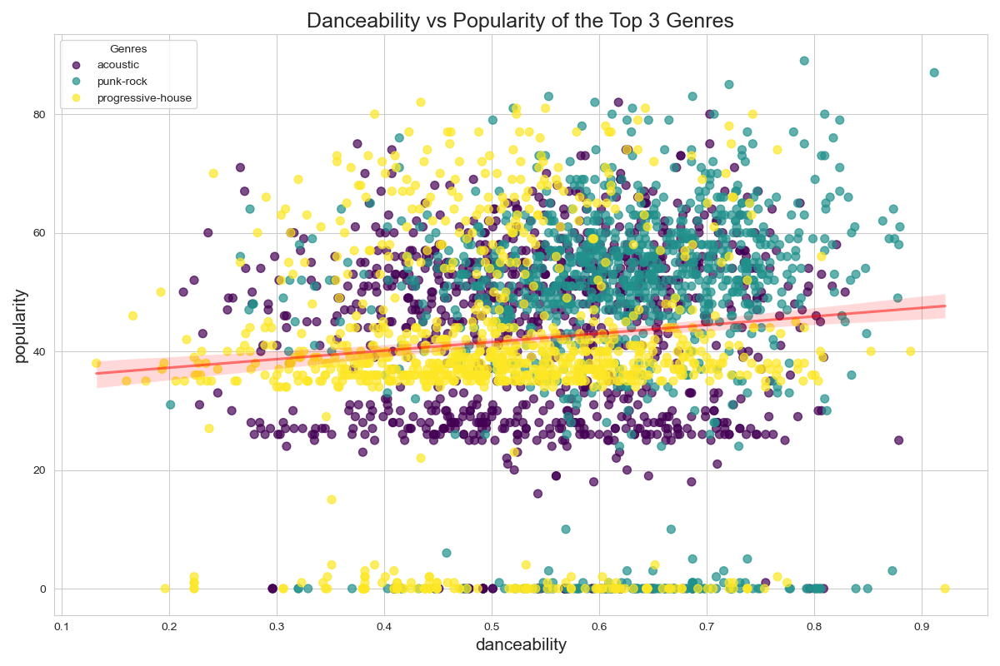
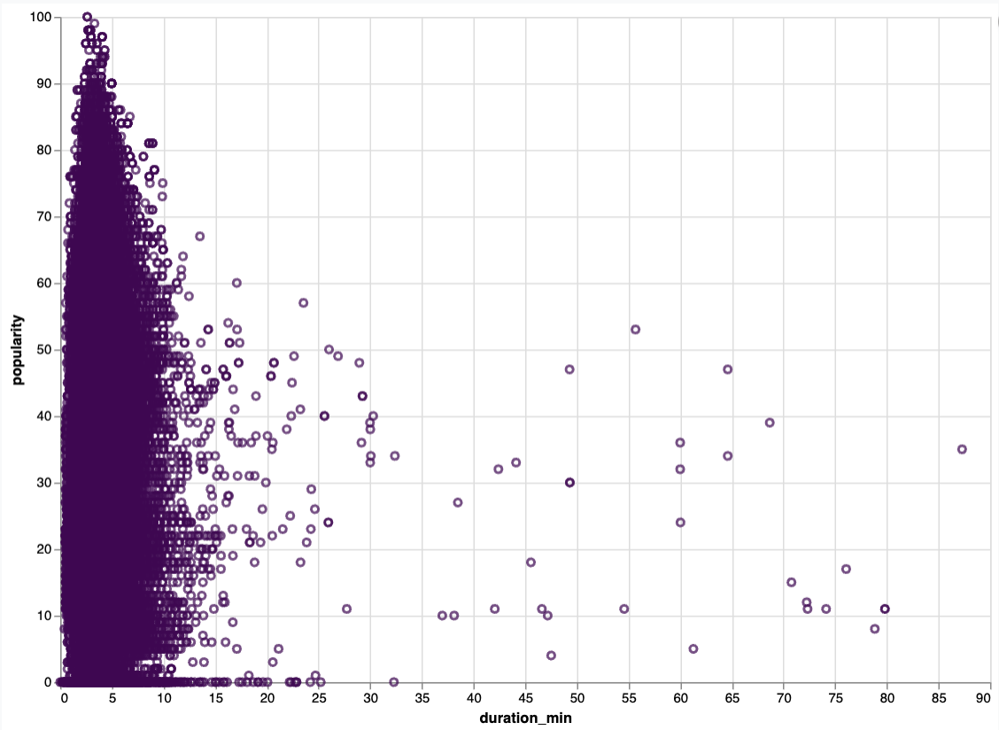
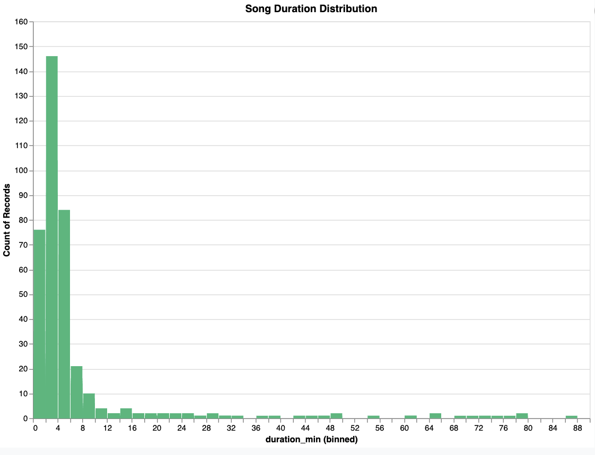
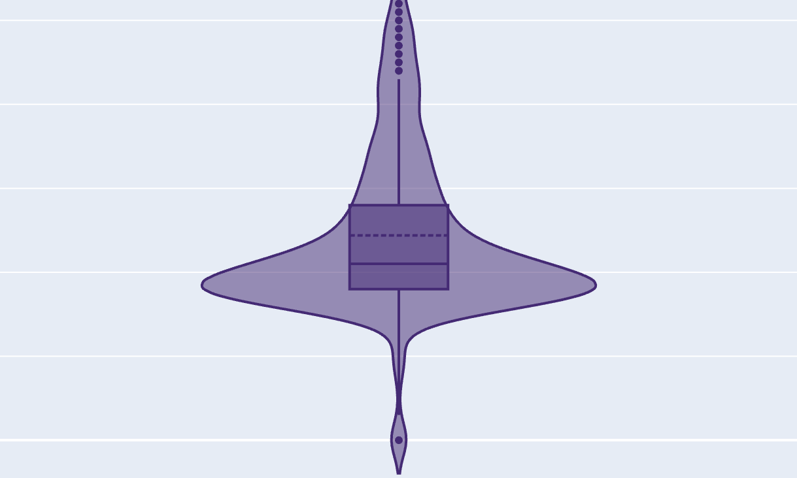

Danceability VS Popularity of Top 3 Genres
This visualization attempts to show the relationship between popularity and danceability
What this plot does
- Due to the large sample size we try to infer the results based on the top 3 genres and we can observe generally (through the trend line) that with the danceability of a song the popularity of it increases as well.
- From this visualization we try to see the relationship between popularity and danceability trying to figure out if a song is popular if people prefer to dance on it or not.
- When we notice the genres we can denote that mostly all punk rock music lies above the trend line but the other 2 genres, acoustic and progressive house are averaged around the trend line.
Duration VS Popularity
This visualization shows the relationship between song duration and popularity, revealing how song length affects listener preference.
What this plot does
- The majority of popular songs (scoring 50-100 on the popularity axis) tend to have shorter durations, primarily clustering below 15 minutes.
- There's a clear negative correlation between duration and popularity - as songs get longer (especially beyond 20 minutes), they generally receive lower popularity scores.
- Extremely long songs (40+ minutes) are rare and typically receive lower popularity scores, though there are a few notable exceptions.
- The densest concentration of data points is in the 2-5 minute range with high popularity scores, suggesting this may be an optimal song length for audience appeal.
Song Duration Distribution
This histogram plot shows the distribution of song durations in a music dataset.
What this plot does
- The vast majority of songs are very short, with the highest concentration (approximately 145 songs) falling in the 0-4 minute range.
- The second most common duration is the 4-8 minute range (about 80-85 songs). There's a sharp decline after 8 minutes, with only about 20 songs in the 8-12 minute range.
- Songs longer than 12 minutes are relatively rare, with counts mostly below 5 per bin. There are occasional longer songs appearing throughout the distribution, with small spikes around 44-48 minutes and 80-84 minutes. There are occasional longer songs appearing throughout the distribution, with small spikes around 44-48 minutes and 80-84 minutes. The overall distribution is heavily right-skewed (or positively skewed), with a long tail extending to longer durations.
Exploring Popularity By Genre
This image shows a violin plot representing the popularity distribution for the chosen genre. The visualization combines elements of a box plot and a density plot to show both the statistical summary and the full distribution shape.
What this plot does
- The chosen genre shows a median popularity score of approximately 22-25, with most songs clustering in the moderate popularity range (15-30).
- The violin shape reveals an interesting distribution with both a thin tail of highly popular outliers (reaching up to 80) and a small number of very low popularity tracks near 0.
- The interface includes a dropdown menu that allows users to select and analyze different music genres, with "afrobeat" currently displayed in this view.
Conclusion
From our analysis, we observed several key trends in music popularity. Most songs tend to be short, with a peak duration of 2-4 minutes, and longer songs (over 10 minutes) are rare. Additionally, shorter songs tend to be more popular, as indicated by a negative correlation between duration and popularity—songs under 10 minutes are more likely to have higher popularity ratings. Genre also plays a role in popularity distribution. In the case of alt-rock, the data reveals a bimodal trend, where some songs achieve moderate to high popularity while others remain obscure. Meanwhile, danceability appears to have a slight positive relationship with popularity across acoustic, punk-rock, and progressive-house genres. Punk-rock songs tend to be more common at higher danceability values, whereas progressive-house tracks are more consistently clustered in the mid-range of both metrics. Overall, our findings suggest that shorter, more danceable songs generally perform better in terms of popularity. However, genre-specific trends highlight that other factors, such as niche appeal and audience preferences, also play a significant role in a song’s success.